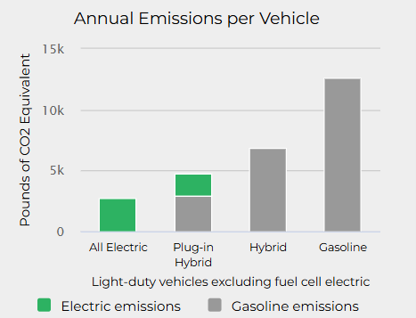
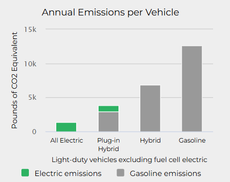
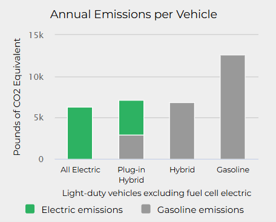
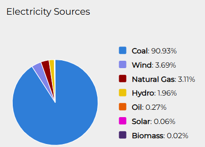

Which States stand to benefit the most from EV adoption?
Table of Contents
Introduction
Data Sources
Background
Key Motivators
Analysis Results
Conclusion
Introduction
Transportation accounts for nearly 30% of global greenhouse gas emissions, yet electric vehicles (EVs) have the potential to cut these emissions by half when powered by clean energy. As adoption rates climb, the question isn’t whether EVs will reshape our environmental and economic landscape, but which states are leading the way and setting the example for others to follow. In this portion of the report, we aim to answer which states stand to benefit the most from EV adoption.
Electric vehicles have a history that dates back to the 19th century, when some of the first automobiles were powered by electric motors. By the early 1900s, EVs were popular for their quiet operation and ease of use, particularly in urban areas. However, the rise of internal combustion engine (ICE) vehicles, fueled by abundant and inexpensive gasoline, led to a decline in EV production and adoption.
Fast forward to the late 20th century, growing concerns about air pollution, fossil fuel dependence, and climate change recognition reignited interest in EV technology. Innovations in battery technology, particularly the development of lithium-ion batteries, dramatically increased the range and efficiency of EVs while reducing costs. The revolution had a clear change of tide. Tesla’s launch of the Roadster in 2008 marked a turning point, demonstrating that EVs could be high-performing and desirable. Prior to 2008, when someone mentioned EVs, the image often conjured was that of a soccer mom driving a Prius. Tesla’s Roadster changed that perception to a sleek convertible sports car. This event transformed the narrative around EVs.
Since then, automakers worldwide have ramped up production, spurred by advancements in battery technology, decreasing costs, and supportive government policies. Clearly, the spark was lit. In recent years, EV adoption has surged due to a combination of environmental awareness, government incentives, and technological breakthroughs. The promise of EVs lies in their ability to reduce greenhouse gas emissions by replacing fossil-fueled vehicles and offering significant long-term economic benefits.
Lower operating and maintenance costs make EVs more affordable for consumers over their lifetime. Their reliance on electricity opens up opportunities for renewable energy integration, which could be a key factor in reaching clean energy goals. Additionally, EVs reduce reliance on volatile oil markets, which are influenced by foreign markets. This revolution could actually contribute positive political diplomacy by alleviating tension in the geopolitical oil industry. These advantages position EVs as a cornerstone of the transition to a sustainable and economically resilient future.
In this portion of the report, we evaluate the factors that influence the potential benefits of EV adoption across different states. By examining air quality, miles driven per state, and electricity prices, we calculate a weighted ranking for each state to determine which regions are poised to gain the most from this transition to electric mobility.
Data Sources
Our analysis will use data from multiple sources. The sources have been acquired and vetted to be from a credible source. We aimed to capture data from government website. Although, they may not always be the cleanest and geared to our specific intent, they are fact managed and maintained consistently enough for us to preference them as oppose to a one time study conducted by a university.
USA - SHPE Data - source:https://www2.census.gov/geo/tiger/GENZ2020/shp/cb_2020_us_state_20m.zip
# Load required librarieslibrary(sf)library(httr)library(ggplot2)# Directory and file setupdownload_dir <-"usa_shapefiles"if (!dir.exists(download_dir)) dir.create(download_dir)# URL for the U.S. states shapefile (Census Bureau TIGER/Line Shapefiles)url <-"https://www2.census.gov/geo/tiger/GENZ2020/shp/cb_2020_us_state_20m.zip"zip_path <-file.path(download_dir, "cb_2020_us_state_20m.zip")# Download and unzip the shapefileif (!file.exists(zip_path)) {cat("Downloading shapefile...\n")GET(url, write_disk(zip_path, overwrite =TRUE))} else {cat("Shapefile already downloaded.\n")}
Shapefile already downloaded.
USA - SHPE Data - source:https://www2.census.gov/geo/tiger/GENZ2020/shp/cb_2020_us_state_20m.zip
unzip_dir <-file.path(download_dir, "cb_2020_us_state_20m")if (!dir.exists(unzip_dir)) {unzip(zip_path, exdir = unzip_dir)}# Load the shapefile using sfshapefile_path <-file.path(unzip_dir, "cb_2020_us_state_20m.shp")us_states <-st_read(shapefile_path, quiet =TRUE)# Filter out non-mainland areasmainland_states <- us_states[!us_states$NAME %in%c("Hawaii", "Alaska", "Puerto Rico", "United States Virgin Islands", "Commonwealth of the Northern Mariana Islands", "Guam", "American Samoa"), ]# Simplify geometries to reduce complexitymainland_states <-st_simplify(mainland_states, dTolerance =0.01) # Adjust tolerance for detail
DOE - City and County Energy Profiles - source: https://catalog.data.gov/dataset/city-and-county-energy-profiles-60fbd
library(readxl)library(dplyr)####Milesfile_path <-"C:/Users/velas/Documents/STA9750-2024-FALL/2016cityandcountymiles.xlsx"# Read datamiles <-read_excel(path = file_path, sheet ="Sheet1")miles_clean <- miles %>%select(state_abbr, population, `vehicle miles traveled (miles)`) %>%# Select specific columnsgroup_by(state_abbr) %>%summarise(total_population =sum(population, na.rm =TRUE),total_miles =sum(`vehicle miles traveled (miles)`, na.rm =TRUE) ) %>%mutate(miles_per_capita = total_miles / total_population)
EIA - Power Generation - source: https://www.eia.gov/electricity/data.php
library(readxl)library(dplyr)####power generationfile_path_power <-"C:/Users/velas/Documents/STA9750-2024-FALL/EIA_powergeneration.xlsx"# Read the sheetpower <-read_excel(path = file_path_power, sheet ="Sheet1")# Summarize the dataset by Year, State Code, and Renewable columnspower_year <- power %>%group_by(Year, Renewable) %>%summarize(Total_Nameplate_Capacity =sum(`Nameplate Capacity (Megawatts)`, na.rm =TRUE)) %>%ungroup()
EPA - Air Quality - source: https://www.epa.gov/outdoor-air-quality-data/download-daily-data
### Air quality# Replace 'path_to_your_file' with the actual path to your CSV fileair_quality_data <-read.csv("C:/Users/velas/Documents/STA9750-2024-FALL/air_quality_data_years.csv", stringsAsFactors =FALSE)air_quality<- air_quality_data %>%filter(Year ==2020) %>%group_by(State) %>%summarize(Average_Value =mean(Value, na.rm =TRUE)) %>%ungroup()
Background
This analysis delves into the transformative potential of electric vehicles (EVs) in addressing some of the most pressing environmental and economic challenges of our time. It explores the environmental benefits of EV adoption, including significant reductions in greenhouse gas emissions, improvements in air quality, and advancements in sustainable resource utilization. Simultaneously, it examines the economic implications, focusing on shifts in energy markets, and the long-term cost savings EVs provide to both consumers and society. Additionally, it investigates which state is adopting EVs the fastest, showcasing the regional leaders setting examples for sustainable development. By analyzing these dimensions, the essay highlights how EVs are shaping a cleaner, more sustainable, and economically resilient future.

Image 1
Contrary to popular belief, electric vehicles (EV) also emit greenhouse gases. The graph above indicates that EVs emit a national average of 2,727 lbs of CO2 per vehicle, while internal combustion (ICE) emit a national average of 12,594 lbs of CO2 per vehicle. Evidently, ICEs produce about 6x more CO2 than EVs when we look at their entire life cycle.
First, the manufacturing stage due to the energy intensive process of mining and processing materials needed for the batteries, like lithium, cobalt and nickel. When compared to internal combustion vehicles, EVs actually emit more greenhouse gases in the manufacturing stage. Which makes sense since most of the process will be similar except for the engine. The manufacturing of the battery accounts for a significant portion of greenhouse gas emissions.

Image 2

Image 3
Second, EVs emit greenhouse gases indirectly by consuming electricity. A byproduct of electricity product is harmful emissions. It should be noted that every state produces electricity differently and their source of electricity portfolio will also be different. For example, an EV from a state that generates electricity from a clean source would emit less emissions than an EV from a state that primary generates electricity from fossil fuels. A great example would be to compare California (Image 2) vs West Virginia (Image 3), an EV from California emits an average of 1,385 lbs vs an EV from West Virginia that emits an average of 6,300 lbs. West Virginia generates 90% of their electricity from coal (Image 4).

Image 4
Below I have created an interactive pie chart. This chart uses EIA data to highlight the renewable profile of each state. As mentioned above, although EV release less emissions than ICEs, an EV in a state state that generates power from a non renewable source will emit more than a state that prioritize renewable gas generation.
Key Motivators
The transition to electric vehicles (EVs) is driven by a combination of economic, environmental, and practical factors that vary by state. While motivations for EV adoption can be broad, this analysis focuses on three key drivers: average miles driven, air quality, and electricity prices. States where residents drive longer distances stand to benefit economically from the lower operational costs of EVs. In regions struggling with poor air quality, EVs offer a sustainable solution to reduce vehicle emissions and improve public health. Additionally, electricity prices play a crucial role in determining the affordability and appeal of EV adoption, particularly in states with low energy costs or investments in renewable energy. By examining these motivators, we can better understand the strategic incentives for states to embrace electric vehicles as part of their transportation future.
Here’s a structured draft for each motivator—average miles driven, air quality, and electricity prices—to help you craft strong, clear, and analytically paragraphs. Let me know if you’d like me to refine this further!
Average Miles Driven
States with higher average miles driven per capita have a strong economic and environmental incentive to adopt electric vehicles (EVs). In regions where residents rely heavily on personal vehicles for daily commutes and long-distance travel, such as rural areas or states with limited public transportation infrastructure, fuel consumption and vehicle emissions are significant concerns.
States with high average miles driven also face heightened environmental impacts, including greater greenhouse gas emissions and air quality degradation from traditional vehicles. By transitioning to EVs, states can mitigate these impacts while simultaneously reducing long-term transportation costs for consumers. Thus, states with above-average mileage have a unique motivation to embrace EV adoption as a strategy for improving economic efficiency and reducing reliance on fossil fuels.
The tables below will highlight the states with the most and least average driven miles per capita. The graph will put into perspective where the rest of the states lie in terms of driven miles. Clearly, Georgians drive the most and that may be due to poor public transportation as mentioned above.
Average Miles Drive
library(readxl)library(dplyr)####Milesfile_path <-"C:/Users/velas/Documents/STA9750-2024-FALL/2016cityandcountymiles.xlsx"# Read datamiles <-read_excel(path = file_path, sheet ="Sheet1")miles_clean <- miles %>%select(state_abbr, population, `vehicle miles traveled (miles)`) %>%# Select specific columnsgroup_by(state_abbr) %>%summarise(total_population =sum(population, na.rm =TRUE),total_miles =sum(`vehicle miles traveled (miles)`, na.rm =TRUE) ) %>%mutate(miles_per_capita = total_miles / total_population)
Average Miles Driven Top 10
library(readxl)library(dplyr)library(knitr)library(kableExtra)library(gt)# analysismiles_map <-miles_clean %>%select(state_abbr,miles_per_capita)miles_t10 <-miles_clean %>%arrange(desc(miles_per_capita)) %>%slice(1:10)# Table for top 10miles_t10 %>%kable(format ="html",col.names =c("State", "Total Population", "Total Miles", "Miles Per Capita"),caption ="Top 10 States by Miles Per Capita" ) %>%kable_styling(bootstrap_options =c("striped", "hover", "condensed", "responsive"),full_width =FALSE,position ="center" ) %>%column_spec(4, bold =TRUE, color ="white", background ="steelblue") %>%row_spec(0, bold =TRUE, background ="gray")
Top 10 States by Miles Per Capita
State
Total Population
Total Miles
Miles Per Capita
GA
4335303
62183953140
14343.62
TN
3936570
54778368124
13915.25
AL
2967987
39320635420
13248.25
FL
10051966
119350862382
11873.39
MS
1533204
17016500110
11098.65
NC
5603342
60474337673
10792.55
DE
267450
2877961456
10760.75
MO
4016772
42760810886
10645.57
VT
626177
6630462002
10588.80
IN
4396654
46053132815
10474.59
Average Miles Driven Bottom 10
library(readxl)library(dplyr)library(knitr)library(kableExtra)library(gt)miles_b10 <-miles_clean %>%arrange(miles_per_capita) %>%slice(1:10)# Table for bottom 10miles_b10 %>%kable(format ="html",col.names =c("State", "Total Population", "Total Miles", "Miles Per Capita"),caption ="Bottom 10 States by Miles Per Capita" ) %>%kable_styling(bootstrap_options =c("striped", "hover", "condensed", "responsive"),full_width =FALSE,position ="center" ) %>%column_spec(4, bold =TRUE, color ="white", background ="tomato") %>%row_spec(0, bold =TRUE, background ="gray")
Bottom 10 States by Miles Per Capita
State
Total Population
Total Miles
Miles Per Capita
SD
604870
2608514572
4312.521
ND
566629
2585199613
4562.420
IA
2485995
13001478339
5229.889
MT
555049
3074559164
5539.257
WY
403018
2257874011
5602.415
DC
659009
3715895205
5638.611
ID
1143115
6609722833
5782.203
NE
1460733
8632545946
5909.736
NY
19694990
122719867084
6231.020
AK
511975
3193804748
6238.204
Average Miles Driven USA
# Perform the join while ensuring geometry is preservedmiles_map_usa <- mainland_states %>%inner_join(miles_map, by =c("STUSPS"="state_abbr"))# Plot the mainland United States and color by miles_per_capitaggplot(data = miles_map_usa) +geom_sf(aes(fill = miles_per_capita), color ="black") +# Map fill to miles_per_capitascale_fill_viridis_c(option ="plasma", name ="Miles per Capita") +# Use a color gradienttheme_minimal() +labs(title ="Miles per Capita by State" ) +theme(plot.title =element_text(hjust =0.5), # Center the titlelegend.position ="right"# Place legend on the right )
Air Quality
Air quality is a critical driver for EV adoption, particularly in states grappling with pollution and poor environmental health outcomes. Areas with significant urbanization, high vehicular traffic, or industries contributing to air pollution face increased risks of respiratory diseases, such as asthma, and other health concerns linked to poor air quality. Adopting electric vehicles, which produce zero tailpipe emissions, can significantly reduce levels of nitrogen oxides, particulate matter, and other pollutants commonly associated with internal combustion engines. For instance, states like California, historically plagued by wildfires that produce smog, have adopted aggressive EV policies to combat air quality issues. Cleaner air not only improves public health but also reduces healthcare costs, creating a dual incentive for policymakers to support EV adoption. Moreover, better air quality aligns with federal and state environmental targets for reducing carbon emissions, positioning EV adoption as a tool for meeting climate goals while enhancing residents’ quality of life.
Below we can see a heat map of air quality through out the United States. It is evident thtat California and Oregon would benefit from an EV revolution.
Air quality
#analysisair_quality_map <- mainland_states %>%left_join(air_quality, by =c("NAME"="State"))library(ggplot2)# Create the map using Value as the fillggplot(data = air_quality_map) +geom_sf(aes(fill = Average_Value), color ="black", lwd =0.2) +# Use Value for fillscale_fill_viridis_c(option ="plasma", name ="Air Quality Index (µg/m³)") +# Add color scale for filllabs(title ="Air Quality Values by State" ) +theme_minimal() +theme(plot.title =element_text(hjust =0.5, size =16), # Center and style the titleplot.caption =element_text(size =10) # Style the caption )
Electricity Prices
Electricity prices play a pivotal role in influencing a state’s decision to encourage EV adoption. States with lower electricity prices offer a cost-effective alternative to gasoline, increasing the financial attractiveness of EVs for residents. The cost per mile to operate an EV is directly tied to electricity rates, and in states with inexpensive, reliable electricity consumers stand to benefit from reduced transportation costs. This is especially true for states that generate power from renewable sources. For states investing in renewable energy, EV adoption presents an opportunity to integrate cleaner energy into the transportation sector. By leveraging existing electricity infrastructure and low prices, states can further reduce emissions and bolster energy independence. Additionally, reducing reliance on gasoline helps prevent dependency on oil-producing countries, which can promote economic and diplomatic stability. As EVs shift energy reliance to domestically produced electricity instead of imported fossil fuels, states can play a role in enhancing national energy security and fostering diplomacy. Conversely, for states with higher electricity costs, the case for EV adoption may require additional incentives, such as subsidies, time-of-use pricing, or investments in infrastructure to drive down costs over time. Nonetheless, transitioning to EVs remains an opportunity to stabilize transportation expenses, especially when compared to the volatility of fossil fuel prices.
Below we can see a heat map of electrical prices throughout the United States. Clearly, California leads the charge in electricity prices.
Electricity Prices
energy_price_path <-"C:/Users/velas/Documents/STA9750-2024-FALL/elect_sales_revenue.xlsx"# Read the sheetenergy_price <-read_excel(path = energy_price_path, sheet ="State-YTD-States")energy_price_usa <- energy_price %>%filter(State =='US') %>%filter(Year !=2024)energy_price_state<- energy_price %>%filter(Year =='2023')energy_price_usa <- energy_price %>%filter(State =='US') %>%filter(Year !=2024)energy_price_state<- energy_price %>%filter(Year =='2023')##USA MAP ELEC PRICEenergy_price_state_map <- mainland_states %>%left_join(energy_price_state, by =c("STUSPS"="State"))library(ggplot2)# Create the map using Cents/KWh as the fill the USA mapggplot(data = energy_price_state_map) +geom_sf(aes(fill =`Cents/kWh`), color ="black", lwd =0.2) +# Use Cents/kWh for fillscale_fill_viridis_c(option ="plasma", name ="Cents per kWh") +# Add a color gradientlabs(title ="Electricity Prices by State (2023)",caption ="Source: https://www.eia.gov/electricity/data/eia861m/" ) +theme_minimal() +theme(plot.title =element_text(hjust =0.5, size =16), # Center and style the titleplot.caption =element_text(size =10) # Style the caption )
Analysis Results
Our analysis aimed to determine which states stand to gain the most from an Electric Vehicle (EV) revolution by evaluating three critical factors: average miles driven per state, air quality levels, and electricity prices per state. To ensure fairness and comparability, we normalized the data for each state by calculating a percentage score. The formula used for normalization was:
Percentage = State’s Value / Maximum Value Across States
This approach yielded a normalized percentage for each state across the three categories. We then weighted each category equally, assigning a weight of 33%. For each state, the final ranking was calculated as follows:
The state with the highest overall score was identified as the state that would benefit the most from widespread EV adoption. This ranking methodology allowed us to comprehensively account for environmental, economic, and transportation-related factors.
Key Findings:
Top 3 States Likely to Benefit the Most from EV Adoption:
California: With a leading score of 72.6, California stands out due to its high air quality concerns, extensive miles driven by residents, and relatively moderate electricity prices.
Georgia: Ranking second at 64.1, Georgia’s significant potential arises from its high driving rates and air quality challenges.
Alabama: At 59.9, Alabama showcases a strong case for EV adoption, driven by similar factors as Georgia.
Bottom 3 States States Least Likely to Benefit:
North Dakota: Scoring just 29.2, North Dakota’s lower air quality concerns and relatively minimal driving distances reduce its potential benefits.
South Dakota: At 31.7, similar factors to North Dakota lead to a low ranking.
Wyoming: With a score of 32.4, Wyoming’s reliance on fossil fuels for electricity generation further diminishes its EV adoption appeal.
Below is a heat map of the United States illustrating each state’s ranking based on their potential benefits from EV adoption, as determined by the formula incorporating air quality, miles driven, and electricity prices.
States Potential Benefit from EVs
#Scoring for formulas state2abr <-mainland_states %>%st_drop_geometry() %>%select(NAME,STUSPS)#energy priceenergy_score <- energy_price_state %>%select(State, `Cents/kWh`) %>%mutate(price_score =`Cents/kWh`/max(`Cents/kWh`, na.rm =TRUE)) %>%select(-`Cents/kWh`)#avg miles drivenmiles_score <- miles_map %>%mutate(miles_score = miles_per_capita /max(miles_per_capita, na.rm =TRUE)) %>%select(-miles_per_capita)#air quality scoreair_score<- air_quality %>%mutate(air_quality_score = Average_Value /max(Average_Value, na.rm =TRUE)) %>%select(-Average_Value)formula <- state2abr %>%left_join(energy_score, by =c("STUSPS"="State"))%>%left_join(miles_score, by =c("STUSPS"="state_abbr"))%>%left_join(air_score, by =c("NAME"="State")) %>%mutate(score = (price_score*33)+(miles_score*34)+(air_quality_score*33))#formula map usaformula1 <- formula%>%select(-NAME,-price_score,-miles_score,-air_quality_score)formula_map <- mainland_states %>%left_join(formula1, by =c("STUSPS"="STUSPS"))library(ggplot2)# Plot the map with fill based on the score columnggplot(data = formula_map) +geom_sf(aes(fill = score), color ="black") +# Fill color based on score and black borderscale_fill_viridis_c(option ="plasma", name ="Score") +# Use a color gradienttheme_minimal() +labs(title ="Beneficiary Scores by State" ) +theme(plot.title =element_text(hjust =0.5), # Center the titlelegend.position ="right"# Place the legend on the right )
Conclusion
States such as California, Georgia, and Alabama exhibit significant opportunities for improvement with EV adoption, particularly due to the high driving rates and pressing air quality challenges. These states stand to benefit from cleaner transportation options and reduced dependency on fossil fuels.
Conversely, states like North Dakota and South Dakota demonstrate lower incentives for EV adoption, as their electricity prices, air quality concerns, and driving patterns do not make EVs as impactful. For these states, other sustainable energy initiatives may hold more promise than a widespread EV revolution.
This analysis underscores the importance of tailoring EV policies to state-specific contexts, focusing on the areas where they can deliver the most substantial benefits.